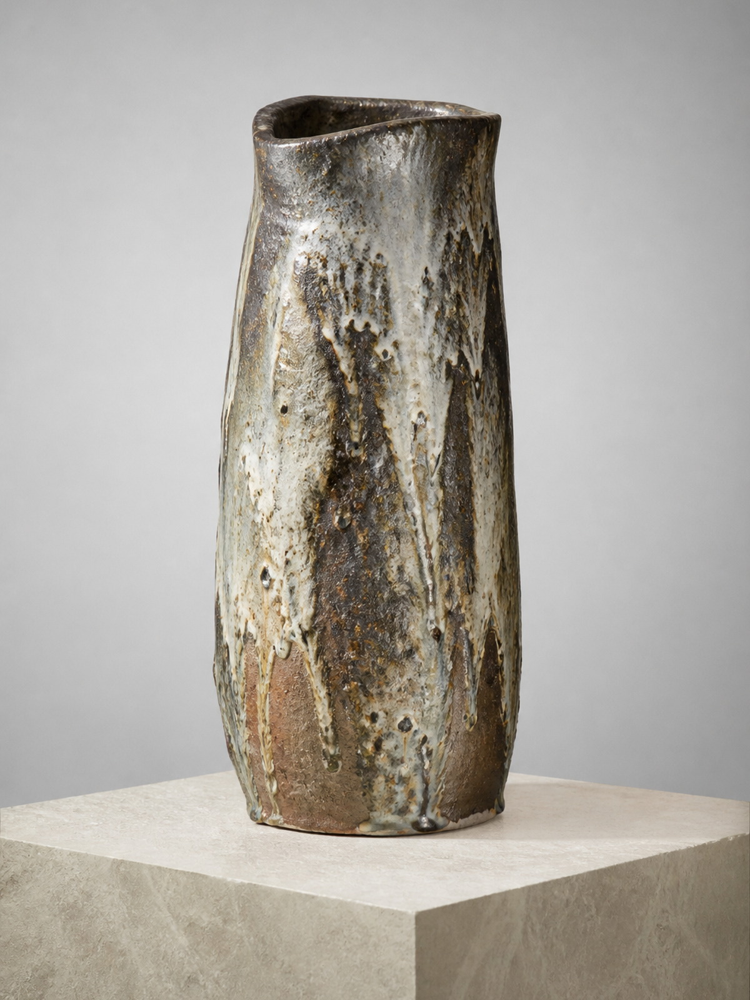
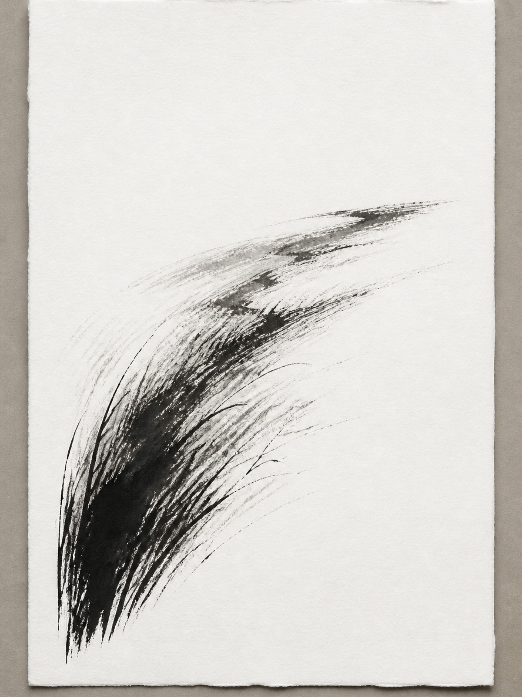
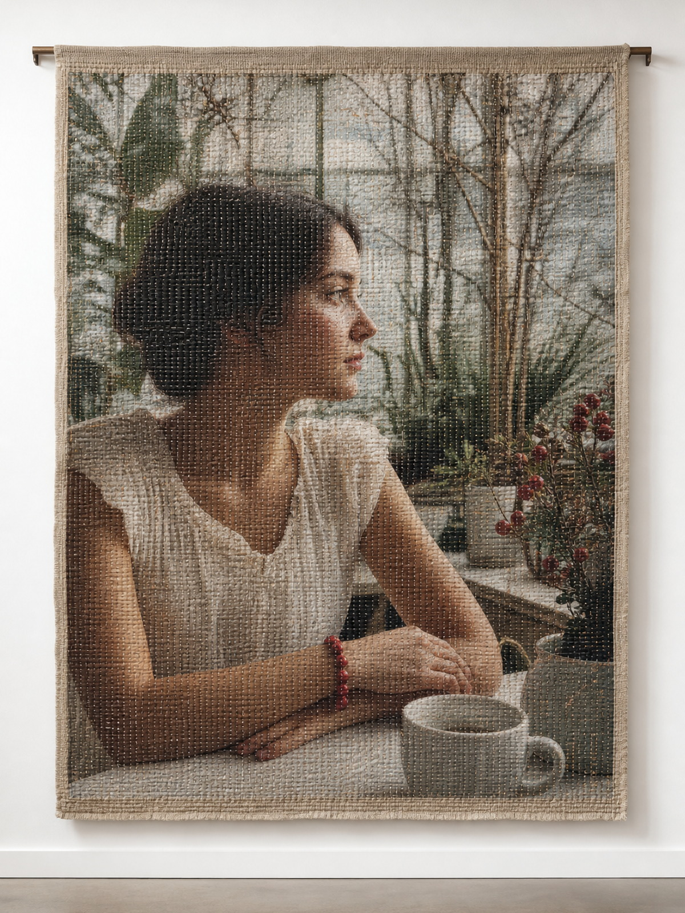
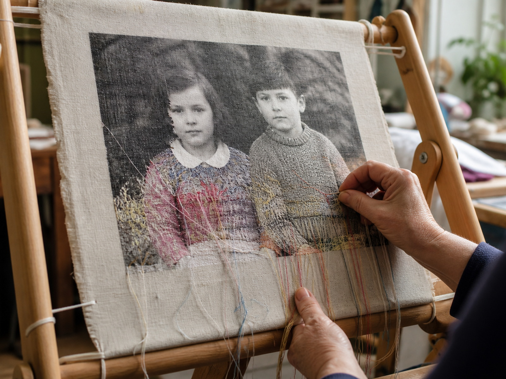
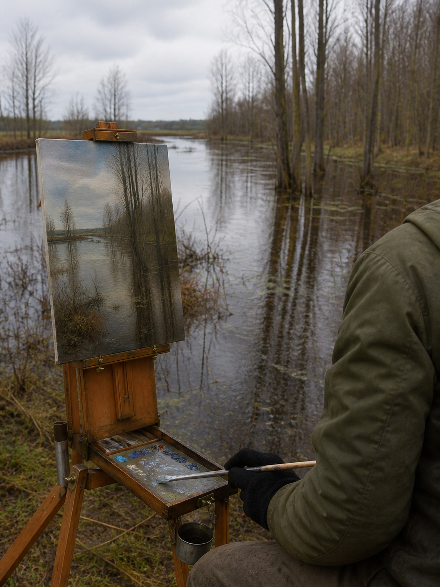

Work card / pass 2
Три роли. Graphic не обязателен.
work_card / default
Discovery. Иерархия: изображение → название → автор. Кандидат выжить в следующий раунд.
Тихий берег
Полина Мирош
work_feature
Избранная работа, не ячейка сетки. Иерархия: изображение → название → автор → один дескриптор → открыть. Кандидат выжить.
work_card / dense
Explore / результаты. Та же иерархия, меньше воздуха. Кандидат выжить, если сетка остаётся читаемой.
Тихий берег
Полина Мирош

Ваза «Полевой обжиг №7» Артём Гончар
Свет 03 Ксения Лапко
Портрет незнакомки с гранатовым браслетом в зимнем саду после дождя Александра-Виктория Круглова-Пташникова
Лён. Проба III Александра-Виктория Круглова-Пташникова
Этюды на разливе Полина Мирошwork_card / graphic
REJECTED — decorative accent adds no useful hierarchy
Жёлтая зарубка на карточке выдачи ничего не сообщает. Цвет, если нужен, принадлежит композиции экрана — не каждой ячейке.